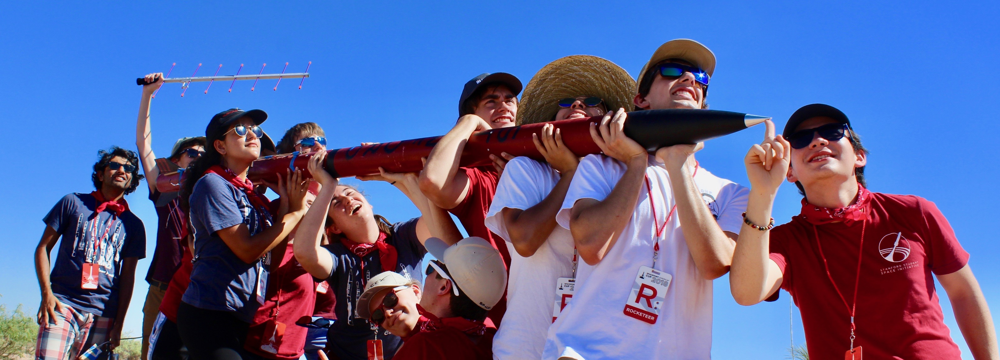

I am an undergrad at Stanford University studying Electrical Engineering. I enjoy building rockets, among other things. Here is a picture of me with my IREC 2018 team in New Mexico (I'm the one in the white shirt holding the nose cone):

I am passionate about sustainability, human spaceflight, and dental hygiene. In the future, I hope to advance the state of human evolution, either by increasing our collective knowledge, or by making our species more sustainable or multiplanetary. I believe that if we can dramatically reduce the cost of access to space, then that will not only result in a technological revolution in space, but it will also let us look back at the Earth and become more reflective on our place in the universe, and be better towards ourselves and our planet. Right now, this is one of the most exciting areas of development to me. I don't yet how I'm going to contribute towards this goal, but I hope that I will figure it out in time.
Some of my favorite books are Permutation City, Snow Crash, Ready Player One, and Red Mars. If you have some time, I would have to recommend watching The Complete Works of William Shakespeare (Abridged) (this is great if you've ever had to read Shakespeare in school), Tom Lehrer's 1967 Copenhagen Performance, or A Better Default Colormap for Matplotlib.
My favorite game is Team Fortress 2, in which I have amassed countless hours of play time. Rocket jumping has consistently been one of my favorite things to do in TF2. Here is a brief video of some of the better rocket jumps I have managed to pull off.
Last updated: December 2019